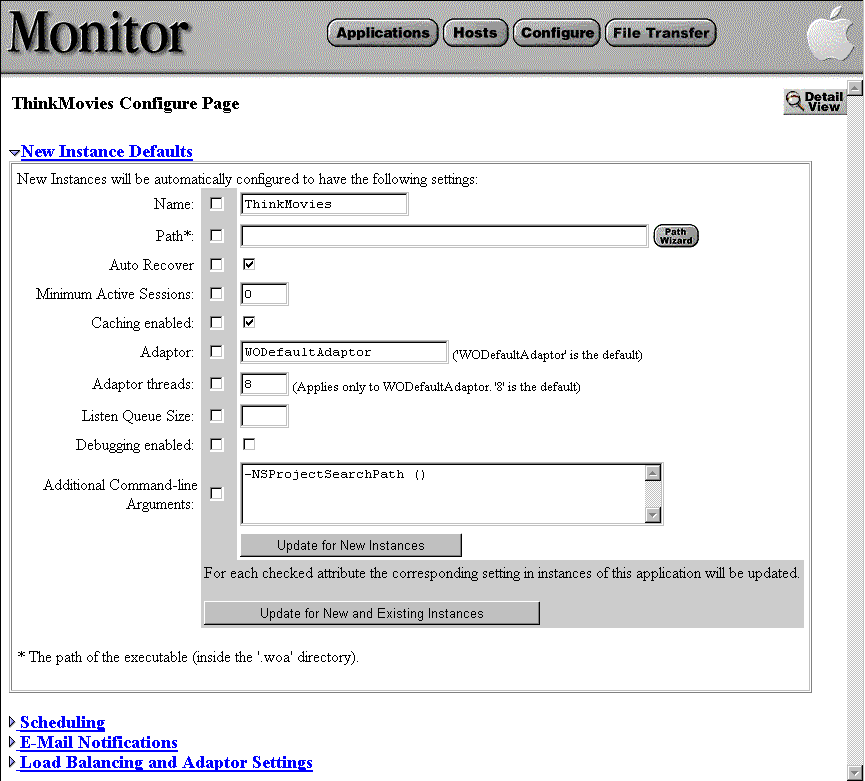

PATH
Documentation > WebObjects 4.5 >
Deploying WebObjects Applications
Setting Command-Line Arguments in Monitor
When you use Monitor to start an instance of an application, it uses a set of arguments to initialize that instance. Most of these arguments are the command-line arguments described in Starting Up Applications From the Command Line. You can change an applications arguments, even for all instances that are currently configured and running, by doing one of the following:
-
New application
: Display the Applications page by clicking the Applications button in the Monitor banner, enter the name of the application in the Add Application field, and then click the Add Application button.
-
Existing application
: Display the Application Configuration page for the application by clicking the Config button next to the application in the Application's page (which you can get to by clicking the Applications button in the Monitor banner). Click the arrow next to the New Instance Default Arguments option of the Application Configuration page.
The following form is displayed:

-
Specify the command-line options you want your application's instances to have. The most common options, which can be changed by simply clicking checkboxes or entering values in fields, are:
Field
|
Option
|
|
Name
|
The name of the application, which is the WebObjects wrapper name minus the ".woa" extension.
|
|
Path
|
The full path to the WebObjects application's executable (including the ".exe" extension on Windows NT).
|
|
Auto Recover
|
Specifies whether Monitor should try to restart the instance if the instance fails.
|
|
Minimum Active Sessions
|
Specifies the minimum number of active sessions allowed.
|
|
Caching enabled
|
Command-line option -WOCachingEnabled. Requests that the application cache component definitions (templates) instead of reparsing HTML and declaration files upon each new HTTP request.
|
|
Adaptor
|
Command-line option -WOAdaptor. The WOAdaptor class name.
|
|
Adaptor threads
|
Command-line option -WOWorkerThreadCount. The maximum number of worker threads for a multithreaded application. Setting this count to 0 results in single-threaded request dispatch.
|
|
Listen Queue Size
|
Command-line option -WOListenQueueSize. The depth of the listen queue If the application is expected to experience "spikes" in its processing load, consider increasing the listen queue depth (althou increasing this setting does not necessarily improve performance or allow the application to server more requests at sustained high loads).
|
|
Debugging Enabled
|
Command-line option -WODebuggingEnabled. Controls whether the application prints debugging messages to standard error duing startup.
|
For command-line arguments not included in the above table, enter them as "-
key
value
" pairs, separated by spaces, in the Additional Command-line Arguments field. See Starting Up Applications From the Command Line for a complete list of command-line arguments.
-
If you want the new settings "pushed" to existing instances, click the checkbox in the gray area next to each option you want pushed, then click the Update for New and Existing Instances button. The existing instances will have to be restarted for new options to take effect. To make the changes effective for new instances only, click the Update for New Instances button instead.
Setting Command-Line Arguments for a Specific Instance
The above procedure affects all new or existing instances of a WebObjects application. Monitor also allows you to set the command-arguments for specific instances. To navigate to the form for doing this, go to the Detail View page for an application and click the Config button next to an instance. A list of instance-specific options is displayed; from the list choose "Application Start-Up/Command-line arguments." The following form is exposed:
Enter the new arguments and click Save Changes in App Starting. Unlike the previous form, this one allows you to specify a specific port, but it doesn't allow you to set Monitor-specific options (such as auto-recover). Moreover, the changes that you make here do not take effect until the instance is restarted.
© 1999 Apple Computer, Inc. – (Last Updated 25 August 99)